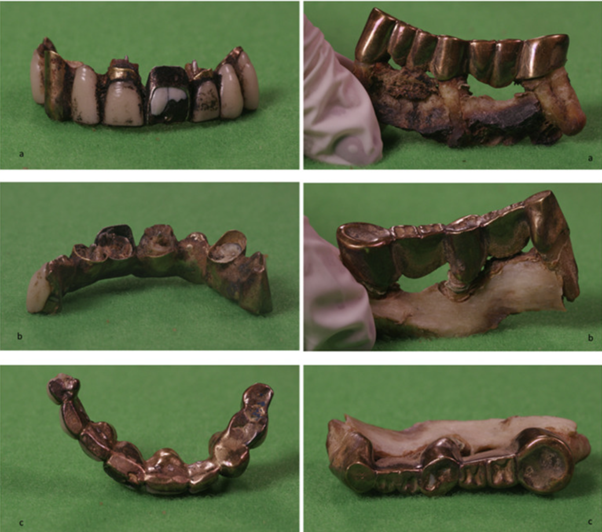

Philippe Charlier
Hier staat de Franse forensisch arts Philippe Charlier. Zijn ouders hebben ook een medische achtergrond. Toen hij ongeveer tien jaar oud was vond hij een menselijk schedel, sinds dien heeft hij interesse in dit vak. Hij heeft archeologie en kunst geschiedenis gestudeerd. Hierdoor is het niet verrassend dat hij zijn onderzoeken richt op stoffelijke overschotten van historische figuren. Door de jaren heen heeft hij geweldige ontdekkingen gedaan.
Ontdekking 1: Gebit Hitler
Hitlers schedel wist hij in het Russisch Staatsarchief te identificeren aan de hand van wat bekend is over zijn gebit. 
Ontdekking 2: Immuunziekte Franse revolutieleider Robespierre
Het dodenmasker van Robespierre bevestigde zijn idee dat de Franse revolutieleider ook zonder executie jong zou zijn gestorven. Hij leed aan een dodelijke immuunziekte.
Oorsprong reuma traceren
Dat Charlier zich 70 jaar na de vondst over deze monnik buigt, is omdat hem ter ore is gekomen dat de monnik vergroeide vingers heeft. Dat duidt op reuma. Hij moet een van de eerste Europeanen zijn geweest die in Zuid-Amerika reuma opliepen. In Europa kwam de ziekte amper voor, in Amerika des te meer. Charlier denkt via de monnik de oorsprong van reuma te traceren.